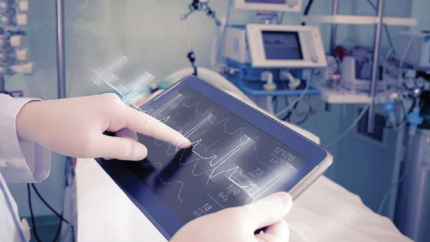

Biomédica Ingeniería en
F A C U L TA D D E I N G E N I E R Í A
Perfil Profesional
El egresado de Ingeniería en Biomédica es un profesional de referencia nacional e internacional, con conocimientos, habilidades y competencias que les permitan desempeñarse en los diversos campos de aplicación de la carrera; con un enfoque en la gestión de la tecnología médica; tiene una clara orientación de las necesidades en sector salud y la sociedad planteando soluciones tecnológicas con innovación e investigación, aplicando métodos de ingeniería y tecnología en el diseño y evaluación de áreas hospitalarias bajo el cumplimiento de normativas vigentes, desarrolla e implementa dispositivos y tecnologías médicas, con el fin de brindar alternativas viables para el mejoramiento de la prestación de servicios de salud con sentido ético y compromiso social.
Competencias Específicas
» Capacidad para utilizar métodos de ingeniería y tecnología para » Capacidad para desarrollar e implementar algoritmos en la
solventar necesidades en la prestación de servicios de salud. resolución de problemas en ingeniería biomédica, tomando en
cuenta la normativa vigente, responsabilidades éticas y sociales.
» Capacidad para aplicar fundamentos matemáticos, físicos y de
ciencia para identificar, formular y resolver problemas de » Capacidad para definir y utilizar sensores, actuadores y sistemas
ingeniería biomédica y clínica. de adquisición de señales biomédicas para la evaluación y/o
diseño de dispositivos médicos.
» Capacidad para interpretar y utilizar los fundamentos de sistemas
fisiológicos humanos tanto a nivel estructural como funcional y » Capacidad para aplicar metodologías de mejora y/o desarrollo de
patologías más relevantes para aplicar soluciones de ingeniería dispositivos médicos bajo experimentación apropiada.
biomédica que satisfagan la necesidad clínica y social.
» Capacidad para diseñar y llevar a cabo proyectos tecnológicos en
» Capacidad para gestionar y analizar la instrumentación biomédica el ámbito de la aplicación de ingeniería biomédica.
para el diagnóstico, monitorización y terapia que interactúan con
el paciente a través de la comprensión de los principios » Capacidad para adquirir nuevos conocimientos de ingeniería a
matemáticos, físicos, mecánicos, electrónicos y de ingeniería. través de métodos efectivos de aprendizaje y aplicarlos para dar
soluciones de necesidades en medicina.
» Capacidad para evaluar infraestructura y tecnología hospitalaria
requerida, desde el punto de vista de la efectividad y la valoración » Capacidad para dirigir, comunicarse e interactuar efectivamente
para su uso en medicina. con una variedad de audiencias afines a la Ingeniería en
Biomédica y las ciencias de la salud.
» Capacidad para identificar, operar y diseñar sistemas de
información utilizados en medicina.
Campo Laboral
» Departamento de ingeniería/biomédica » Consultoría biomédica
de Hospitales y clínicas
» Fundaciones y brigadas médicas
» Empresas distribuidoras o representantes de casas fabricantes de tecnología médica » Docencia e investigación VM09042025V Empresas prestadoras de servicio o
soporte técnico de tecnología o » Empresa propia de servicios infraestructura médica biomédicos
» Instituciones gubernamentales de salud
w w w . u n i t e c . e d u
U.V.
Introducción al Álgebra MAT101 ESP103 BMD101 LCC104 Comunicación Oral y Introducción a la Ingeniería Ofimática Avanzada Escrita Biomédica 12 4 U.V. (4-0) 2 U.V. (2-0) 2 U.V. (1-1) 4 U.V. (4-0)
4 U.V. (4-0) MAT102 EIE1 HIS101 SOC101 Electiva de Idioma Álgebra Historia de Honduras Sociología Extranjero I 13 3 U.V. (3-0) 3 U.V. (3-0) 3 U.V. (3-0)
Trigonometría Geometría y MAT103 ART/DEP EIE2 FIL101 Electiva Arte o Electiva de Idioma Filosofía Deporte Extranjero II 13 3 U.V. (3-0) 4 U.V. (4-0) 3 U.V. (3-0) 3 U.V. (3-0)
4 U.V. (4-0) Cálculo I MAT109 EIE3 MAT105 QUI101 Electiva de Idioma Álgebra Lineal Química General Extranjero III 15 4 U.V. (4-0) 4 U.V. (4-0) 3 U.V. (3-0)
4 U.V. (4-0) Cálculo II MAT210 EIE4 MEC301 TLL310 Electiva de Idioma Dibujo Técnico Ética y Ciudadanía Extranjero IV 12 3 U.V. (2-1) 2 U.V. (1-1) 3 U.V. (3-0)
Diferenciales Ecuaciones MAT203 FIS201 TLL314 MAT301 Metodología de Física I Estadística Matemática I Investigación 13 4 U.V. (4-0) 4 U.V. (4-0) 4 U.V. (4-0) 1 U.V. (0-1)
MAT209 FIS202 BMD303 ADM102
Variable Compleja Física II Anatomía y Fisiología I Administración I 15 3 U.V. (3-0) 4 U.V. (4-0) 4 U.V. (4-0) 4 U.V. (4-0)
Análisis de Circuitos SEL311 EMP401 FIS203 BMD305 Generación de Empresas Física III Anatomía y Fisiología II Eléctricos en D.C. I 14 3 U.V. (3-0) 4 U.V. (4-0) 4 U.V. (3-1) 3 U.V. (3-0)
Análisis de Circuitos SEL312 EMP402 BMD301 BMD304 Generación de Empresas Termodinámica Instalaciones Hospitalarias I Eléctricos en A.C. II 13 3 U.V. (3-0) 3 U.V. (3-0) 4 U.V. (3-1) 3 U.V. (3-0)
SEL313
Análisis de Circuitos BMD308 BMD306 BMD203 Electrónicos Seminarios Clínicos Instalaciones Hospitalarias II Regulación Sanitaria 13 3 U.V. (3-0) 3 U.V. (3-0) 3 U.V. (3-0) 4 U.V. (3-1)
Electrónicos y A.O. Amplificadores SEL314 SEL308 BMD402 BMD307 Ingeniería de Control Instalaciones Hospitalarias III Ingeniería Clínica 14 4 U.V. (4-0) 3 U.V. (3-0) 3 U.V. (3-0) 4 U.V. (3-1)
Programación C++ CCC214 BMD311 BMD309 MEC306 Sistemas de Gases Bioinstrumentación y Sensores y Actuadores Medicinales Tecnologías Biomédicas I 14 4 U.V. (4-0) 4 U.V. (4-0) 3 U.V. (3-0) 3 U.V. (3-0)
Procesamiento de Señales BMD416 BMD417 BMD310 SEL405 Tecnologías de Laboratorio Bioinstrumentación y Teoría del Control Digital Biomédicas Clínico Tecnologías Biomédicas II 13 3 U.V. (3-0) 4 U.V. (3-1) 3 U.V. (3-0) 3 U.V. (3-0)
BMD418 * BMD312 BMD419 EFEBMD1
Sistemas de Imágenes Biomecánica y Desarrollo de Electiva de Formación Análisis de Dispositivos
3 U.V. (3-0) Médicas Biodispositivos Específica I Médicos 14 4 U.V. (4-0) 4 U.V. (4-0) 3 U.V. (2-1)
*
BMD420 BMD421 IND432 EFEBMD2
Procesamiento de Imágenes Electiva de Formación Sistemas de Gestión de la
Informática Médica Innovación y Tecnología Médicas Específica II 3 U.V. (3-0) 14 3 U.V. (2-1) 4 U.V. (4-0) 4 U.V. (4-0)
** *
BMD428 EFEBMD3
Proyecto de Investigación Electiva de Formación
4 U.V. (0-4) Específica III 8 4 U.V. (4-0)
Elegir
*** ***
BMD503 BMD504
Proyecto de Graduación Práctica Profesional 4 U.V. (0-4) 4 U.V. (0-4) 4
u.v. 214
* Requisito: 172 U.V. aprobadas VM09042025V
Electivas de Formación Específica ** Requisito: 202 U.V. aprobadas, índice académico >= 70%
Código Asignatura U.V. Requisitos ***Requisito: 210 U.V. aprobadas, índice académico >= 70%, cumplir con SEL407 Electrónica de Potencia el requisito de graduación de competencias idiomáticas. 4-0 SEL314
PLAN BMD422 Tecnologías de Odontología 4-0 BMD417 Bloque del Conocimiento Asig. U.V. % Laboratorio SEL402 Microprocesadores I 4-0 SEL405 Formación General y Complementaria 15 45 21 BMD423 Ges ti ón de Tecnología Médica 4-0 IND432 Ciencias Básicas 16 61 29 Eje de Vinculación BMD424 Tecnologías de O ft almología 4-0 BMD417 Tecnologías Básicas 8 31 14 BMD425 Electrónica y Fotónica en Disposi ti vos Médicos 4-0 SEL405 Ingeniería Biomédica Aplicada 22 69 32 Eje de Investigación
2020 BMD426 Infraestructura Hospitalaria 4-0 IND432 Formación Integradora 2 8 4 BMD427 Tecnologías de Laboratorios de Patología 4-0 BMD417 Eje de Emprendimiento Total 63 214 100 IND434 Normalización y Auditoría de la Calidad 4-0 IND432